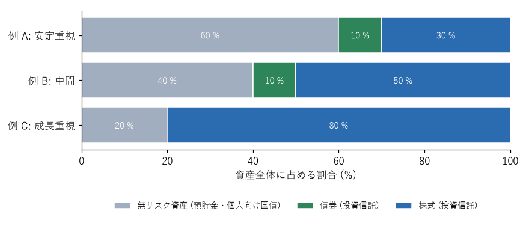

8. 資産配分
投資の成果を最も大きく左右するのは、どの銘柄を選ぶかよりも、資産全体をどの種類の資産にどれだけ配分するかである。この配分を資産配分（アセット・アロケーション）という。本章では、一般の人に向いた資産配分の考え方を説明する。
8.1. 無リスク資産とリスク資産に分ける
資産配分を考える最も簡単な方法は、資産全体を次の 2 つに分けることである。
種類 |
例 |
役割 |
|---|---|---|
無リスク資産 |
預貯金、個人向け国債 |
価格が下がらない。生活防衛資金や、近いうちに使うお金を置く。リスク資産の下落時に資産全体の目減りを抑える |
リスク資産 |
株式や債券に投資する投資信託 |
価格は変動するが、長期的に資産を増やす |
リスクの大きさは、主に「リスク資産の割合」で調整する。リスク資産として何を持つかは、全世界株式のインデックスファンド 1 本でも十分に分散できる。リスクを下げたいときは、リスク資産の中身を変えるよりも、無リスク資産の割合を増やすほうが分かりやすい。
8.2. 債券をどう考えるか
債券のインデックスファンドは、株式より値動きが小さく、株式と異なる値動きをすることが多いため、資産全体の値動きを穏やかにする役割がある。
ただし、日本の個人にとっては、預貯金や個人向け国債が債券に近い役割を果たせる。個人向け国債は価格が下がらず、金利が上がれば適用金利も上がる（変動 10 年の場合）。そのため、リスク資産は株式の投資信託だけにし、安全な部分は預貯金や個人向け国債で持つという考え方もある。
外国債券のファンドは為替の影響を受けるため、資産全体の値動きを穏やかにする効果は、国内の無リスク資産より小さい。債券のファンドを使うかどうかは、自分が管理しやすい方法で決めればよい。
8.3. 資産配分の例
図 8.1 は、資産配分の例である。これらは考え方を示すための例であり、推奨する配分ではない。

図 8.1 資産配分の例（資産全体に占める割合）
例 |
想定する状況 |
暴落時（株式が半分になった場合）の資産全体の減り方 |
|---|---|---|
例 A：安定重視 |
投資を始めたばかりで値動きに慣れていない、数年以内に大きな支出の予定がある、定年が近い |
約 15〜20 % |
例 B：中間 |
収入が安定していて、生活防衛資金も十分にある |
約 25〜30 % |
例 C：成長重視 |
若く、投資できる期間が長い。値動きを冷静に受け止められる |
約 40 % |
暴落時の減り方は、株式の部分が半分になり、債券の部分が多少下がると仮定した場合の目安である。例えば例 C では、資産の 80 % を占める株式が半分になると、資産全体は約 40 % 減る。自分の資産全体が、この程度減っても投資を続けられるかを考えて、配分を決める。
年齢による目安として、「100 から年齢を引いた数を株式の割合（%）にする」という考え方が紹介されることがある。単純で分かりやすいが、年齢だけでリスク許容度は決まらない。第 6 章で説明したように、収入の安定性、生活防衛資金、投資できる期間、性格なども考慮して決める。
8.4. リバランス
資産の価格が変動すると、資産配分は当初決めた比率からずれていく。株式が値上がりすれば株式の割合が増え、値下がりすれば減る。ずれた比率を元に戻すことをリバランスという。
リバランスには、次の方法がある。
積立先の調整：割合が減った資産を、毎月の積立や追加の資金で多めに買う。売却しないため、税金や手数料がかからない。
売却と購入：割合が増えた資産を売り、割合が減った資産を買う。課税口座で利益が出ている資産を売ると、税金がかかる。
リバランスは、年に 1 回など時期を決めて行うか、比率が当初から 5 ポイント以上ずれたときに行うなど、自分なりの規則を決めておくとよい。頻繁に行う必要はない。
リバランスには、値上がりした資産を売り、値下がりした資産を買うことになるため、結果として「高く売って安く買う」行動になるという面もある。ただし、主な目的はリスクの大きさを当初の水準に保つことである。
8.5. まとめ
資産配分は、投資の成果とリスクを最も大きく左右する。
資産全体を無リスク資産とリスク資産に分け、リスク資産の割合でリスクを調整する。
株式が半分になったときに資産全体がどれだけ減るかを考え、耐えられる配分にする。
比率がずれたら、積立先の調整などでリバランスを行う。